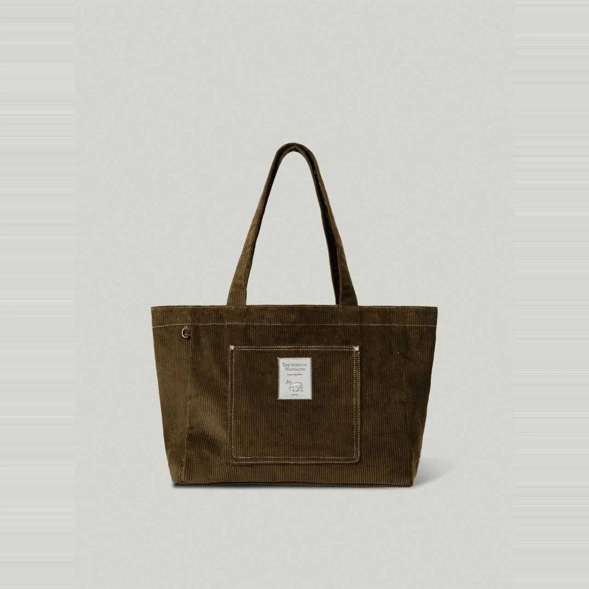

Tote Bag Corduroy Vintage Ribbed 90s
- Bahan Kain Korduroi Garis Timbul Lembut (Velvet Wale Ribbed)
- Ukuran 33 x 39 cm / 35 x 40 cm
- Kategori Corduroy
- Minimum Order Min. 50 pcs
Kain korduroi dengan alur garis timbul khas yang tebal, empuk, dan hangat saat disentuh. Memberikan sentuhan retro vintage 90-an yang sangat hits di kalangan fashion distro streetwear dan merchandise konser musik.